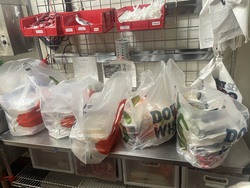
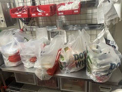
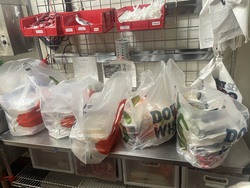

Mya Wilson
My name is Mya Wilson, I have spent a significant amount of time working in both the service industry and in administrative settings. Growing up as the eldest daughter of my family, I quickly became very accustomed to taking on a variety of responsibilities to keep everything in my household running smoothly and efficiently. I feel that my upbringing is constantly reflected in my work ethic especially when it comes to high pressure or high stake situations. Whether it be in a restaurant or in an adminstrative office position, my abilities to multi-task, prioritize, and communicate with others are reflected greatly.
I am an undergraduate student at the University of California Riverside, and I am studying Sociology with hopes of entering the legal industry and eventually attending law school.
In my previous positions in the service industry, I have learned and mastered the use of Point of Sales systems, worked with other employees to assist restaurant guests and serve dishes to guests in a timely manner. In my adminstrative positions I have managed front desks, worked with financial and business staff to create office filing systems to properly store all documents, and kept track of deliveries to and from the office.
Experience
Administrative Assistant
• Process packages, mail, and deliveries that arrive to the office
• Assist professors and faculty with exam printing, sending out event information, and any other administrative tasks
• Store and file order documentation and financial documents
Server
• Greeted guests, took phone calls, managed reservations, and mastered the use of our cash handling and POS systems.
• Maintained lively conversation with tables, took food and drink orders, provided silent refills, and brought food and drinks to tables in a timely and efficient manner
• Completed modules regarding food handling and customer service tactics and assisted management in training new employees
Front Desk Associate
• Greeted customers, scheduled appointments, and provided intake forms and waivers to all players
• Educated and informed guests on safety regulations and proper use of facility equipment
• Organized files including consent forms and waivers, and transferred paper documents to online databases
• Disinfected equipment and frequently sanatized facility to maintain a cleanly enviornment for guests
Education
UC Riverside
Portfolio

.jpg) 

